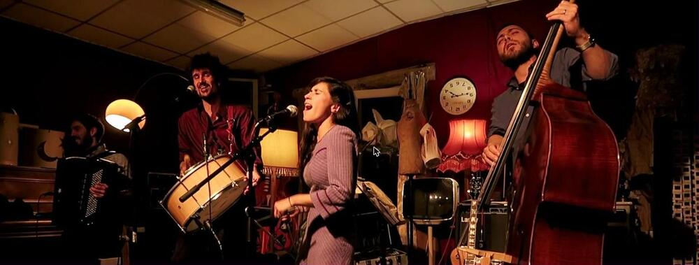

Initiation et bal forró avec The Forroscopic’s

Lieu : Café Sous Les Palmiers, 8 boulevard de Verdun, Saint-Nazaire
Rendez-vous le samedi 1er février 2020 au Café Sous Les Palmiers pour danser le forró.
18h : initiation forró par l’association Les pieds ont des oreilles.
19h : début du bal avec The Forroscopic’s, qui vous emmènent sur les traces du forró traditionnel pour mieux s’éloigner des sentiers battus et explorer le moindre recoin de la piste de danse, au cœur d’un bal chaleureux, sensible et joyeux.
Vidéos
Les vidéos sont hébergées par YouTube. Elles ne se chargent, et YouTube n'est contacté, qu'au moment où vous cliquez sur lecture.